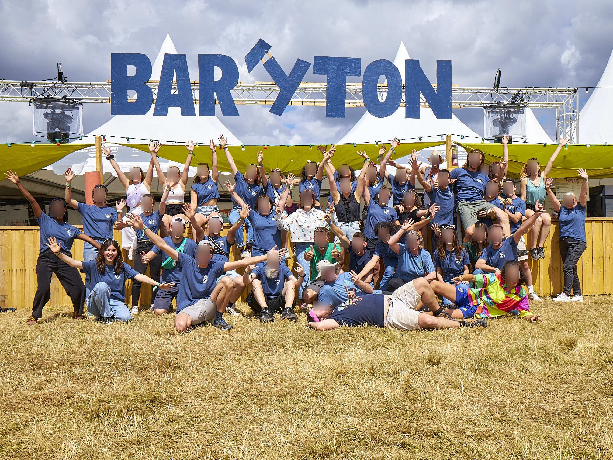
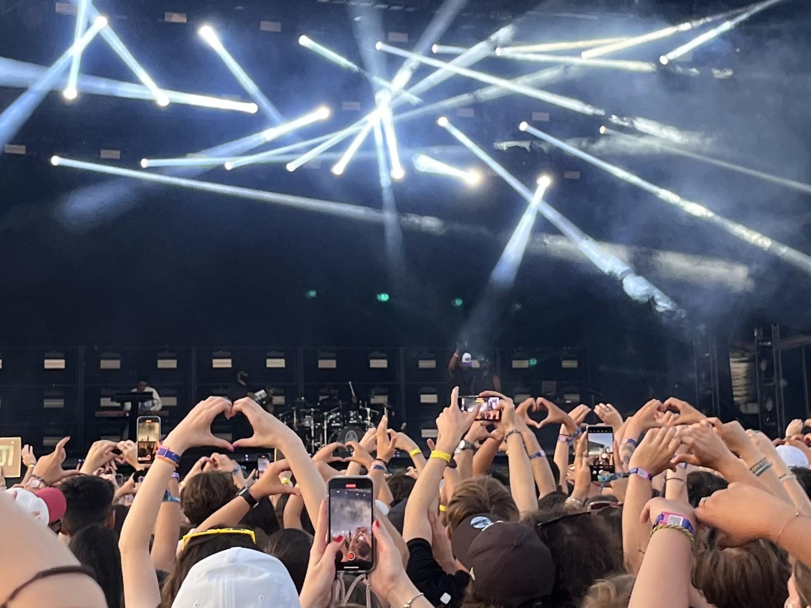
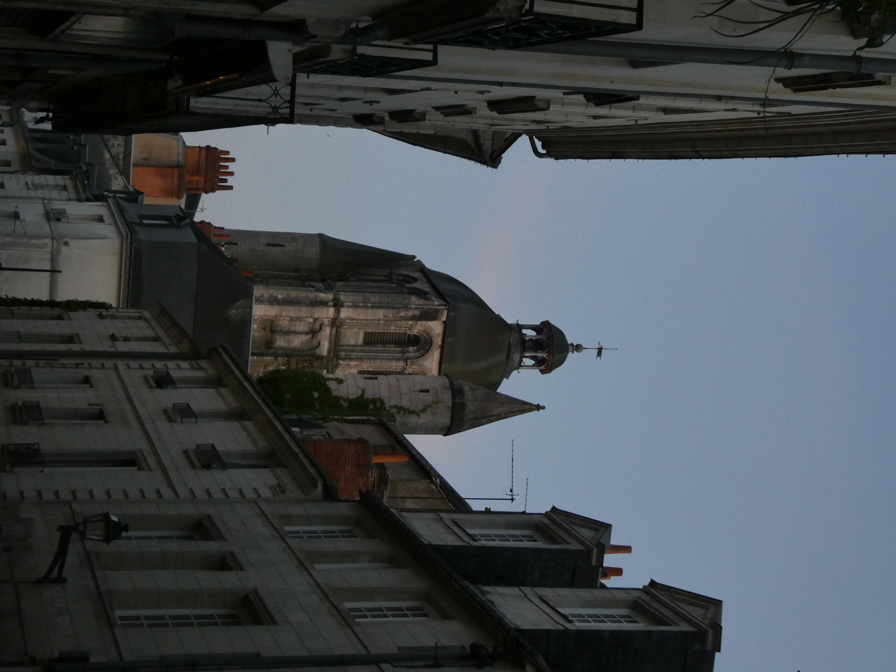

Bonjour, je suis étudiante en science des données à Niort. J'aime me définir comme une personne curieuse, ouverte aux nouvelles expériences, et toujours motivée à m'impliquer dans des projets collectifs.
Depuis deux ans, je m'investis dans le monde des festivals. J'ai commencé avec le festival tourangeau "Superflux", dédié à la musique expérimentale, où j'ai participé à la communication en tant que bénévole. J'ai contribué à la création de contenu photo, vidéo et de témoignages pour alimenter les réseaux sociaux du festival, et cela m'a permis de découvrir l'envers du décor d'un événement culturel tout en développant des compétences concrètes en communication.
Dans un autre registre, j'ai également été community manager des réseaux sociaux de mon département, le BUT Science des données de Niort, aux côtés de trois autres étudiants. Concevoir des publications et représenter notre formation sur les réseaux m'a permis de développer un esprit de synthèse, de la créativité, tout en respectant la neutralité de la formation, et un vrai sens du travail en équipe.



En 2024, j'ai également rejoint l'équipe bénévole du festival Terres du Son. Cette expérience a été particulièrement enrichissante, tant sur le plan humain que logistique. J'y ai rencontré des personnes avec qui j'ai gardé contact tout au long de l'année.
Je m'intéresse aussi à la photographie, que je pratique de manière personnelle. Elle m'offre une façon différente de voir mon environnement, en particulier ma ville, Tours, que je redécouvre à travers les petits détails du quotidien. J'aime également découvrir de nouveaux artistes et aller à des concerts, ou simplement échanger sur des sujets de société, de culture ou de communication.
Toutes ces expériences renforcent mon envie de contribuer à des projets concrets, humains et porteurs de sens. C'est pour cela que je suis impatiente de poursuivre sur cette voie de la découverte et de continuer à apprendre de nouvelles choses, en gardant cette curiosité qui me pousse au quotidien à sortir de ma zone de confort !